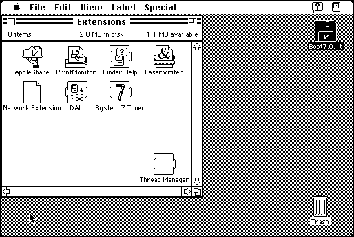

Download (external link)
Thread_Manager_2.0.1.sea.bin (45K) Thread Manager 2.0.1
copyright: Apple Computer, Inc.
mod date: Jun 1, 1994
license: free, but don't redistribute
A system extension from Apple required by some programs (like MacBalsa). To install, place it in the “Extensions” Folder which is in the “System Folder”. Requires System 7. It is already installed by default in System 7.5.

Here is the md5 checksum for the download, signed with Gryphel Key 5:
--------- GRY SIGNED TEXT --------- 501531a12b3f826c4523059f25344163 Thread_Manager_2.0.1.sea.bin ------- BEGIN GRY SIGNATURE ------- Gry/4Xa8CFcUzxdN/Ow2Iz0FmksCB2iTydJxfSB04wUIng0xsgB5/8kzCjZKWq/p 31lT10nQYa3+EUgA58JOogOznBChXtj8jzH6ke2RtYEyTgvhL9jupwDtM3BfKKkk uw1BnzoiJbsbhaOLhBnrewlVNQOKTIIkPVnaQII/DsS+cpBhg7lfleFzU8QL6oUO -------- END GRY SIGNATURE --------